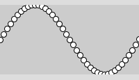

In der Programmierung kommt es immer wieder vor, dass man eine gewisse Sache mehrmals machen möchte. Zum Beispiel möchtest du, dass in der Konsole 3mal "Ha" gedruckt wird. Oder du möchtest, dass auf einem Bildschirm 10mal ein Kreis gezeichnet wird. Da Informatiker von Natur aus Faul sind und keine Lust haben 10mal den Code für einen Kreis zu schreiben, haben sie die For-Schleife entwickelt. Eine for-Schleife ist ein Konstrukt, das dir ermöglicht einen Codeblock so oft auszuführen, wie du es möchtest.
Der Aufbau einer for-Schleife erinnert an den, einer if-Anweisung. Schau es dir mal an. Die For-Schleife sieht allgemein so aus:
for (INTIALISIERUNG; BEDINGUNG; AKTION)
ANWEISUNG
Am Anfang haben wir das Schlüsselwort for, dann kommt etwas innerhalb der runden Klammern und dann kommt der Code, der ausgeführt werden soll. Allerdings kommt bei der for-Schleife etwas anderes in die runden Klammern, als bei der if-Anweisung.
Schauen wir uns das Ganze aber erstmal anhand eines Beispiels an. Nehmen wir an, du möchtest drei Mal "wow" drucken. Dann machst du das mit einer For-Schleife wie folgt:
for (int zaehler = 0; zaehler < 3; zaehler = zaehler + 1) {
println("wow");
}Hier siehst du, wie die drei Aspekte von oben - Initialisierung, Bedingung und Aktion - aussehen. Was passiert hier aber?
- Initialisierung: Als erstes müssen wir der for-Schleife eine Variable geben, die sie zum Zählen verwenden soll. Das ist die sogenannte Laufvariable. In unserem Beispiel ist das int zaehler. Diese haben wir auf 0 gesetzt, weil wir bei 0 anfangen wollen zu zählen. Wir hätten aber auch eine andere Zahl eintragen können. In den meisten Fällen steht hier aber eine 0 oder eine 1. Mithilfe der Initialisierung kannst du festlegen von wo deine Schleife anfängt zu zählen.
- Bedingung: Hier legen wir fest, wie lange bzw. wie oft unsere Schleife ausgeführt werden soll. Die Schleife wird nur durchlaufen, wenn die Bedinung true ist. Hier wird kontrolliert, ob unser zaehler < 3 ist. Da wir bei 0 angefangen haben zu zählen, ergeben sich hier ingesamt 3 Durchläufe, bevor die Schleife endet und zwar für zaehler = 0, für zaehler = 1 und für zaehler = 2. Danach ist die Bedingung false und die Schleife wird nicht mehr durchgeführt. Mithilfe der Bedingung kannst du festlegen bis wohin deine Schleife zählt.
- Aktion: Die Aktion wird immer am Ende eines Schleifen-Durchlaufs durchgeführt - also nachdem der Code im Codeblock ausgeführt wurde. In unserem Fall wird der zaehler um 1 erhöht. Auf diese Weise zählt die Schleife von 0 auf 1 auf 2 und auf 3 hoch. Hier kann aber auch etwas anderes stehen. Zum Beispiel könnte der zaehler auch um 1 verringert werden oder auch um 2 erhöht werden. Mithilfe der Aktion kannst du steuern in welche Richtung und in welchen Schritten deine Schleife zählt.
Du kannst im Code-Block auf die Laufvariable zugreifen (z.B. um sie auszugeben). Häufig wird die Laufvariable i genannt (wahrscheinlich für engl. increment), aber man kann natürlich beliebige Namen verwenden.
In der Schleifenaktion wird meist der Inkrementoperator ++ verwendet. Dieser erhöht die Variable um 1. Beispiel:
int x = 0;
println(x);
x++; // macht das gleiche wie x = x + 1;
println(x);Analog gibt es den Dekrementoperator -- :
int x = 0;
println(x);
x--; // macht das gleiche wie x = x - 1;
println(x);
Die For-Schleife, die du also am häufigsten in irgendwelchem Code sehen wirst, ist folgende:
for (int i = 0; i < 3; i++) {
println(i);
}Programmablaufplan
Falls du dich fragst, wie das Programmablaufplan einer For-Schleife aussieht:
Der Syntax einer For-Schleife wirkt am Anfang etwas sperrig. Schreibe viele davon und lass dir wie oben immmer die Laufvariable ausgeben, dann bekommest du schnell ein Gespür dafür. Beim Programmieren verwendet man für Wiederholungen fast immer die For-Schleife, es lohnt sich also...
Laufvariable ist lokal
Die Laufvariable einer For-Schleife ist eine lokale Variable:
for (int i = 0; i < 5; i++) {
// Laufvariable i ist lokal innerhalb der Schleife
println(i);
}Die Variable i wird im Kopf der Schleife (erste Zeile) deklariert und existiert für die Dauer der Schleife, also bis zur schließenden geschweiften Klammer. Das heißt, dass man nach der Schleife nicht mehr auf i zugreifen kann:
for (int i = 0; i < 5; i++) {
println(i);
}
println(i); // FEHLER!Du kannst natürlich mehrere Schleifen hintereinander definieren, die alle eine Variable namens i verwenden. Es wird jedesmal eine neue Variable erzeugt.
// Variable i ist lokal
for (int i = 0; i < 5; i++) {
println(i);
}
// Hier wird ein neue Variable i eingeführt
for (int i = 10; i > 0; i--) {
println(i);
} Beispiele für For-Schleifen
Rückwärts zählen
Du kannst natürlich auch rückwärts durch die Zahlen gehen, wenn du die Initialisierung, Bedingung und Aktion entsprechend anpasst.
for (int i = 10; i > 0; i--) {
println(i);
} Ein häufiger Anfängerfehler ist hier, dass die Bedinung "falsch herum" gedacht wird, also i < 0. In diesem Fall wird die Schleife gar nicht ausgeführt, da i zu Beginn 10 ist, also nicht kleiner 0.
Jede zweite Zahl
Du kannst auch in 2er-Schritten durch die Zahlen schreiten. Beachte die Aktion.
for (int i = 0; i <= 10; i = i + 2) {
println(i);
}Summe
Eine typische Anwendung der For-Schleife ist die Berechnung der Summe 1 + 2 + 3 + ... + N, wobei N eine beliebige Zahl ist. Eine wichtige Erkenntnis ist, dass dazu eine zusätzliche Variable zum Speichern der Zwischenergebnisse nötig ist.
int n = 5; // bis wohin gehen?
int summe = 0; // zum Aufsammeln
for (int i = 1; i <= n; i++) {
summe = summe + i;
}
println(summe); // AusgebenHier lohnt sich vielleicht der Blick auf eine Tabelle:
| Durchlauf | i | i <= 5 | summe |
| 1 | 1 | true | 1 |
| 2 | 2 | true | 3 |
| 3 | 3 | true | 6 |
| 4 | 4 | true | 10 |
| 5 | 5 | true | 15 |
| 6 | 6 | false | --- |
Funktionsgraphen zeichnen
Lineare Funktionen
Mit einer Schleife kann man natürlich auch super zeichnen, z.B. die einfache lineare Funktion f(x) = x. Als Laufvariable nehmen wir direkt das x, das von 0 bis 90 in Zehnerschritten läuft. Nur zur Verständlichkeit führen wir eine lokale Variable y ein.
for (int x = 0; x < 100; x = x + 10) {
int y = x;
ellipse(x, y, 5, 5);
}Die Funktion "steht Kopf", weil die y-Achse ja nach unten zeigt. Wenn wir das richten wollen, müssen wir y invertieren.
for (int x = 0; x < 100; x = x + 10) {
int y = 100 - x;
ellipse(x, y, 5, 5);
}Jetzt können wir auch andere Funktionen zeichnen, zum Beispiel die Funktion f(x) = x / 2 + 50, also eine Gerade mit y-Schnittstelle 50 und Steigung 1/2. Dazu sollten wir x und y als float wählen, um ganzzahlige Division zu vermeiden. Beachte auch, dass der komplette Term (x/2 + 50) invertiert werden muss.
for (float x = 0; x < 100; x = x + 10) {
float y = 100 - (x/2 + 50);
ellipse(x, y, 5, 5);
}Sinuskurve
Wenn du eine Sinuskurve zeichnen möchtest, musst du Folgendes bedenken:
- Die x-Werte für eine Phase der Sinuskurve laufen von 0 bis 2*PI, also ungefähr von 0 bis 6. Du möchtest deine Kurve aber über die x-Pixel 0 bis 100 darstellen.
- Der y-Werte der Sinusfunktion liegen im Bereich von -1 bis +1. Du möchtest aber Punkte auf einem y-Bereich von 0 bis 100 darstellen. Man beachte außerdem, dass die y-Achse des Grafikfensters nach unten zeigt.
Daher muss unser erster (naiver) Versuch scheitern:
size(200,100);
for (float x = 0; x <= width; x += 5) {
ellipse(x, sin(x), 8, 8);
}Warum? Erstens werden alle 6 Pixel (x-Wert) eine volle Sinusphase durchlaufen. Zweitens schwanken die Werte von sin(x) zwischen -1 und 1.
Also müssen wir zunächst unseren x-Wert in den Bereich von 0 bis 2*PI bringen. Das machen wir mit der Processing-Funktion map(). Schau in der Dokumentation nach, wie map() funktioniert.
for (float x = 0; x <= width; x += 5) {
float x2 = map(x, 0, width, 0, 2*PI);
// ...
}Der Wert x2 ist jetzt im Bereich 0 bis 2*PI. Wenn wir jetzt sin(x2) anwenden, müssen wir noch das Ergebnis von [-1, 1] auf [0, 100] abbilden. Um nebenbei noch die Achse umzudrehen, bilden wir von [-1, 1] auf [100, 0] ab.
size(200,100);
for (float x = 0; x <= width; x += 5) {
float x2 = map(x, 0, width, 0, 2*PI);
float y2 = sin(x2);
float y = map(y2, -1, 1, height, 0);
ellipse(x, y, 8, 8);
}Man kann sich das so vorstellen, dass sich (x2, y2) im Raum der Sinuskurve befindet (x2 in [0, 2*PI] und y2 in [-1,1]) und (x, y) sich im Raum des Grafikfensters (je in [0,100]). Die zweimalige Anwendung von map() transformiert die Werte jeweils von einem in den anderen Raum.

Coding Style
Bitte achte darauf, wo Leerzeichen und Zeilenumbrüche gemacht werden, und wo nicht.
for (int i = 0; i < 3; i++) {
println(i);
}Alternativ:
for (int i = 0; i < 3; i++)
{
println(i);
}Denke auch daran, deinen Code mit Bearbeiten > Autoformatierung von Processing korrekt einrücken zu lassen (Tastenkürzel STRG+T bzw. CMD+T).
Zusammenfassung
Eine For-Schleife erlaubt es, eine Zahl von Codezeilen (Code-Block) wiederholt auszuführen. Die allgemeine Form der For-Schleife lautet:
for (INTIALISIERUNG; BEDINGUNG; AKTION)
ANWEISUNGDabei ist die ANWEISUNG i.d.R. ein Code-Block.
Man kann die For-Schleife als Kurzschreibweise für eine bestimmte Form der While-Schleife auffassen.
In der For-Schleife wird in der INITIALISIERUNG zunächst eine Laufvariable erschaffen und gesetzt. Diese Variable ist eine lokale Variable innerhalb des Code-Blocks der Schleife.
Die BEDINGUNG ist die Schleifenbedingung. Nur wenn diese wahr ist, wird die ANWEISUNG (i.d.R. ein Code-Block) durchgeführt.
Die AKTION wird am Ende eines Schleifendurchlaufs durchgeführt. Hier sollte die Laufvariable verändert werden (z.B. hoch- oder runtergezählt), da sonst die Gefahr besteht, dass die Schleife endlos läuft.
Ein Beispiel für eine typische For-Schleife:
for (int i = 0; i < 3; i = i + 1) {
println("Runde " + i);
}